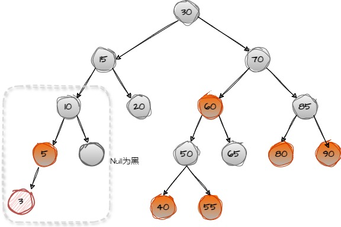
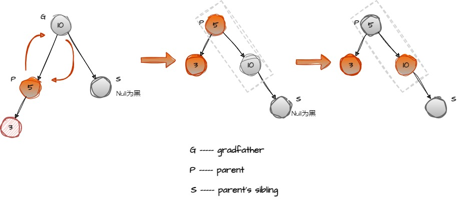
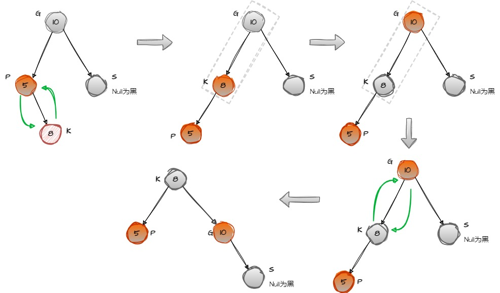
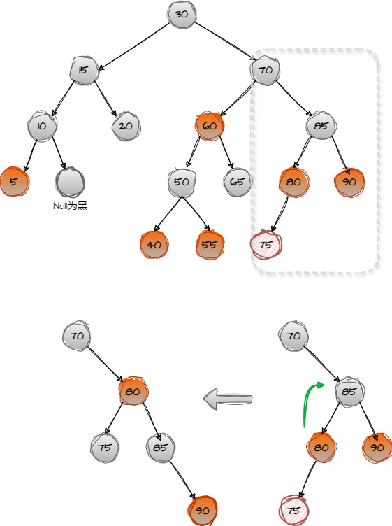
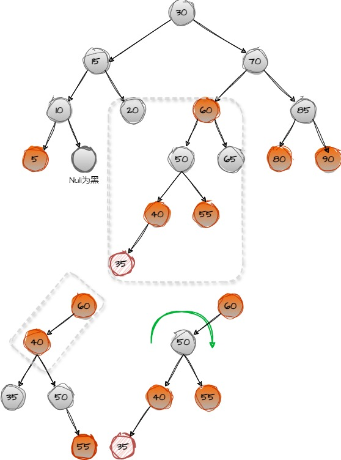
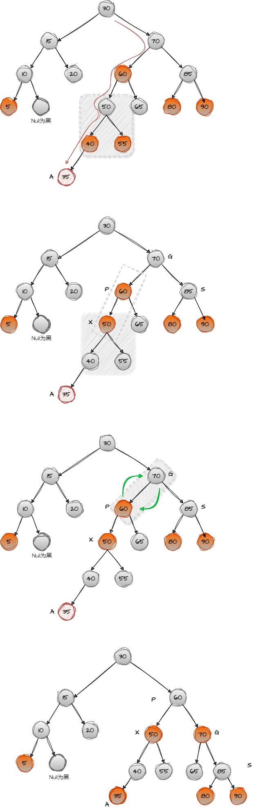

RB-tree Tutorial¶
What is a Red-Black Tree?¶
Red-Black Trees are another type of the Balanced Binary Search Trees with two coloured nodes: Red and Black. It is a self-balancing binary search tree that makes use of these colours to maintain the balance factor during the insertion and deletion operations.
Properties of Red-Black Trees¶
Node Color: Each node is either red or black.
Root Property: The root of the tree is always black.
Red Property: Red nodes cannot have red children (no two consecutive red nodes on any path).
Black Property: Every path from a node to its descendant null nodes (leaves) has the same number of black nodes.
Leaf Property: All leaves (NIL nodes) are black.
So according to Black Property, the new node must be red in color. And according to Red Property, the parent node of the new node must be black in color.
Insertion Operation on Red-Black Tree¶
After inserting the new node as a red node, we might encounter several cases depending on the colors of the node’s parent and uncle (the sibling of the parent):
Note
The new node must be RED
Cases 1: Uncle is Black and this new node is a left child¶
“Uncle is Black” means that the color of the parent’s sibling is either black or if it does not exist,
It is obvious that the new node 3 violate the Red Property, So we shoud perform a right rotation on the grandparent and recolor appropriately.
Cases 2: Uncle is Black and this new node is a right child¶
First, perform a left rotation on parent.
Second, change the color of the new node and grandparent.
Third, Perform a right rotation again.
Case 3: Uncle is Red¶
Case 3.1: the Great GrandParent is black.¶
perform a right rotation on grandparent(85) and change the new node’s color from RED to Black.
Note
we cann’t do it as case 1 and case 2. Because that if we change the parent and grandparent’s color,then the node 85 would be red in color
and sibling is red in color too. So it violate “Red property”
Case 3.2: the Great GrandParent is Red¶
As we do perform a right rotation on grandparent. Both the node 60 and the node 40 are red in color. So it also violate “Red Property”.
We have to do perform rotation and recolor them again.
Top down procedure¶
Avoid the case 3.2 we could try to use another solutions which is called “top-down-procedure”. Assuming the newly added node is A, then follow the path of A. As long as you see that the two child nodes of a node x are red, change x to red and the two child nodes to black.
